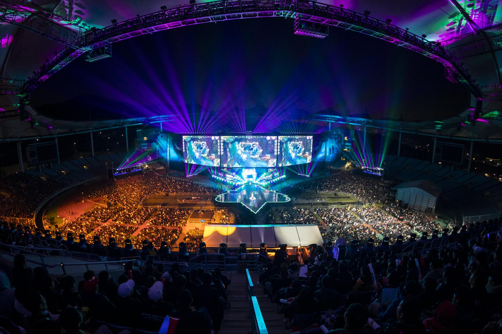
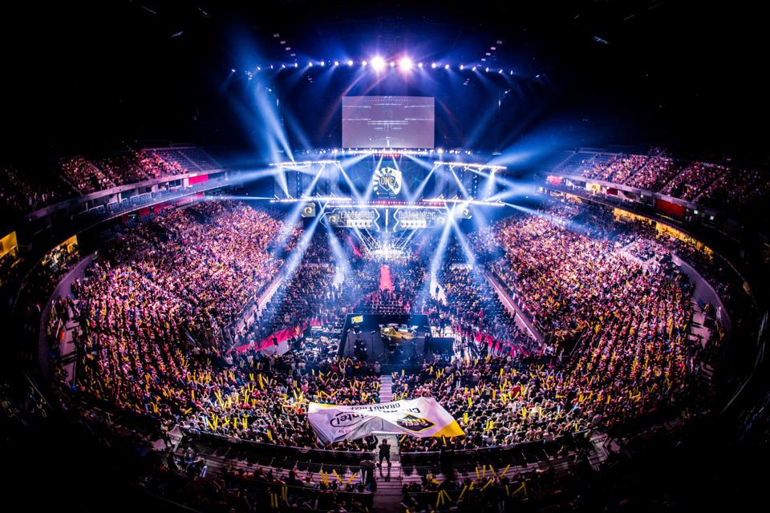

Esport Leagues
League of Legends
In Esports
League of Legends (LoL) is a globally popular multiplayer online battle arena (MOBA) game developed by Riot Games, where two teams of five players compete to destroy the opposing team's Nexus, located in their base. Each player controls a unique champion, chosen from a roster of over 150, each with distinct abilities and playstyles. The League of Legends World Championship, often referred to as "Worlds," is the pinnacle of LoL Esports, drawing millions of viewers from around the globe. This annual event features the best teams from various regions competing for the Summoner's Cup and a multi-million dollar prize pool, making it one of the most prestigious and watched events in the Esports world.
Counter Strike
In Esports
Counter-Strike: Global Offensive (CS:GO) is a tactical first-person shooter where two teams of five players, known as Terrorists and Counter-Terrorists, compete in objective-based gameplay. The most popular mode is "Bomb Defusal," where the Terrorists aim to plant a bomb at a designated site, while the Counter-Terrorists try to prevent this by either eliminating the enemy team or defusing the bomb. The game is renowned for its need for precision, strategy, and teamwork, making it a staple in the competitive gaming scene. The biggest tournament in the CS:GO Esports calendar is the Major Championship, often simply called "the Majors." These tournaments are organized by Valve, the game's developer, and feature the best teams from around the world competing for a prize pool of $1 million or more. Winning a Major is one of the highest honors in the CS:GO community, and the events draw millions of viewers, both online and in-person, making them a major highlight in the Esports world.